Welcome to V-PLate_detection’s documentation!
Deployment Apps
An application developed by implementing the Moildev-SDK developed by the Ming-chi Omnidirectional Imaging and Laboratory (MOIL) uses Fisheye images by utilizing a wide angle to monitor vehicle traffic on the streets. This application is called the monitoring multi-views system, which detects vehicle license plates by using a user interface created using PyQt6 design.
With the existence of a repository reference source that provides and provides a model that is good enough to be used in implementing the YoloV4 method that will be built, based on the repository above, we decided to borrow the method they use for developing the application that we will build which is integrated with the use of the Moildev-SDK Fisheye image remapped into 2 different views at each point, where this method is used as an alternative to the use of cameras that are widely installed on the streets.
This application was built using the Python programming language, PyQt6 starting from the design stage of problem analysis, and goals, until it reaches the application development stage from version 1, which displays a menu Open File, Open Video, Live Streaming, camera Parameters and additional Inside and outside button options. with alpha, beta, zoom configurations that can save and create Anypoint inside and Anypoint outside images and several other configurations with a simple user i nterface as shown in Figure below.
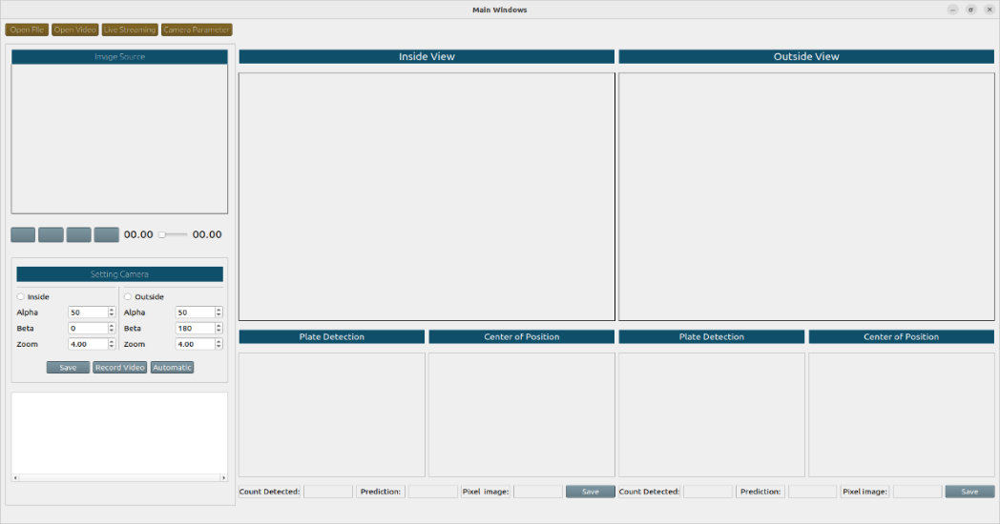{kind=link}
As time went on at the stage of making this application with the addition of new designs and components input by Professor Chuang-Jan Chang, the appearance of the user interface was changed according to the initial goal, namely so that users could maximize the existing tools in the monitoring system application. The new impression is shown in Figure below
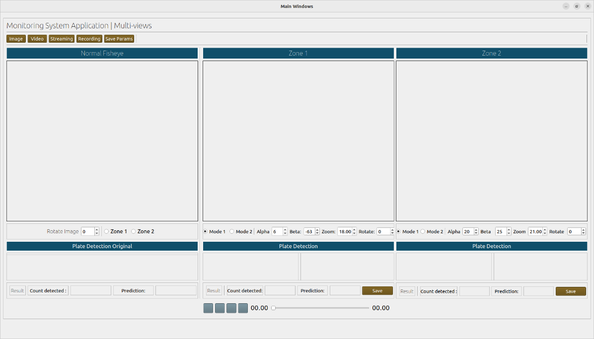{kind=link}
The version-2 application is equipped with additional features that can load images for processing, such as additional configuration components in this version-2 application, such as direct control of the processed images and the addition of image rotation. Aji Pamungkas Tri Nurcahyo provided this input. There is also a source-code function created, shown in Figure below.
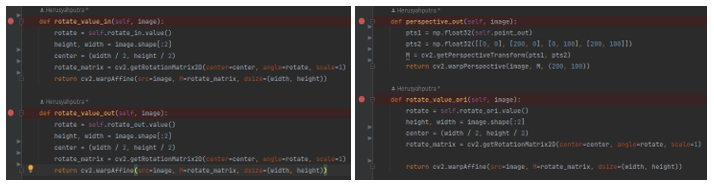{kind=link}
The addition of mode choices and rotation configurations on the user interface is useful for aligning images according to user wishes and a 4-point perspective transform applied to this application which aims to get vehicle license plate images with direct control without the user having to save configuration parameters alpha, beta, zoom, rotate, and mode on the application.
Additional information was also provided by Haryanto to guide how to process images in the application and to know each running application process, which is an endless loop that aims to inform the user of the current process. The source code is shown in Figure below.
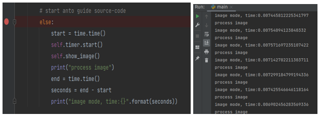{kind=link}
So, from the many reference sources used and contributions made by members of the Ming-chi Omnidirectional Imaging and Laboratory (MOIL), this system is better than before. This is inseparable from Slender role as a help during the application development process to the experimental simulation process. As shown in Figure below.
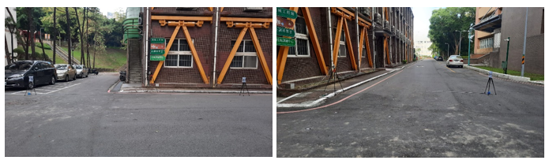{kind=link}
The Fisheye image datasets obtained from the experimental simulation process are processed with the aim of being compared with the results of regular images from the repository into the monitoring system application. As shown in Figure below
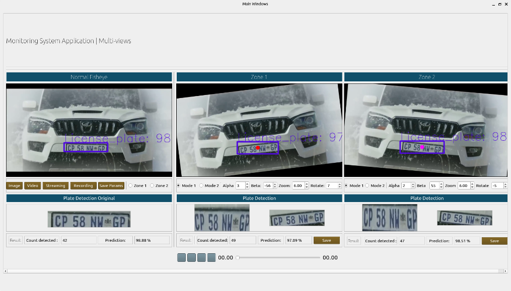{kind=link}
The system runs well-using images from the repository in a regular form. When the system knows there is a vehicle plate object, it will detect the vehicle plate automatically every time, but so does the fisheye image. Still, the difference is in the fisheye image. Namely, the algorithm is not fully running, so it must require configuration settings to detect vehicle plates. This is because the model used uses a model from a regular image form. Such as Figure below
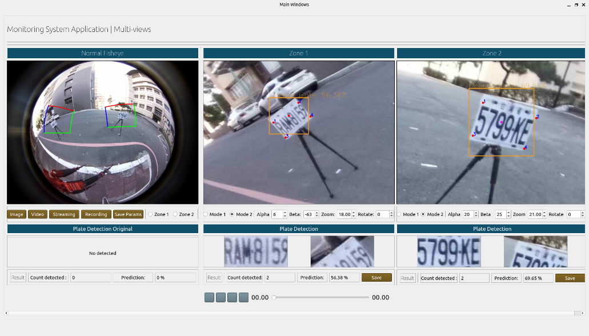{kind=link}
The development of this monitoring system application utilizes GitHub to view updates carried out in stages from the start of application development, the application update process to the current version. There is also a repository specially created for this application, as shown in Figure below
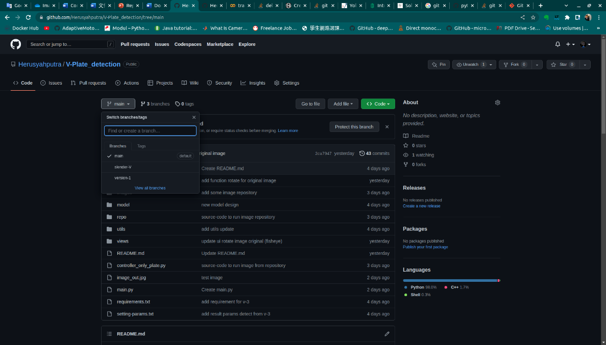{kind=link}
The repository above shows several other branches that were made to see the application process built from version 1 as an initial build. The public can access this repository so that other users can run this monitoring system application on their computer by installing it in the requirements.txt and the guide in the README.md provided. The following is attached evidence of the use of control from the Pycharm tool used during manufacture, update source, and commit history of each process for making this application which is shown in Figure below.
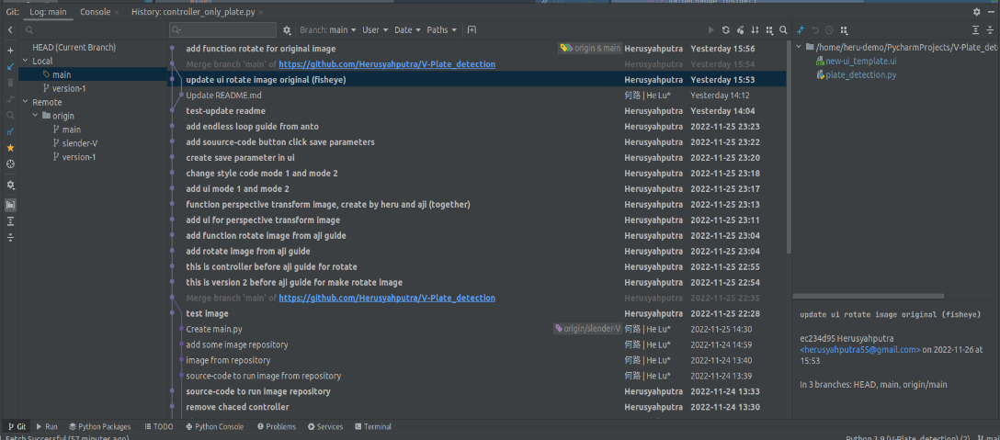{kind=link}
It can be seen from the history of each commit made on Pycharm starting from version-1 (early) that you can compare every update made to the source code, users can also restore the previous source code using the rollback command if there is an error during program development, as shown in Figure below.
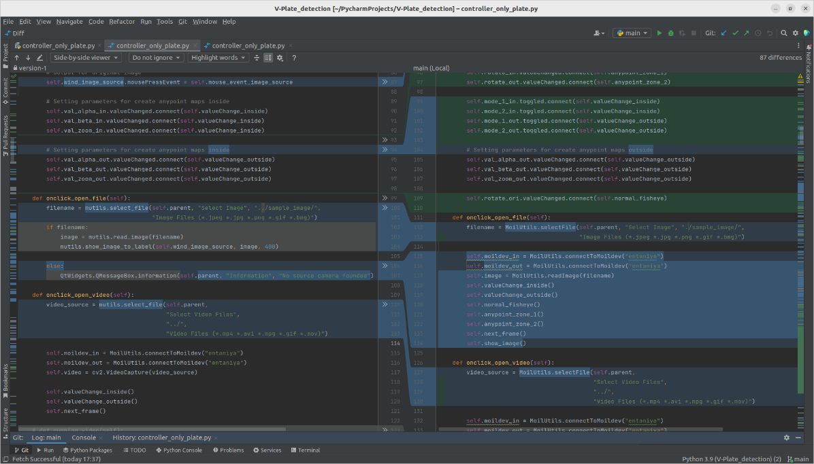{kind=link}
Making this application is inseparable from the use of Git as a tool used for developing an application that records the process from the beginning to the current application, for that here we provide several commands to make it easier to introduce Git to the Pycharm tool during the application development process using the repository as the trail. In addition, this monitoring system application provides source-code documentation created using sphinx documentation, which generates code automatically. This documentation aims to understand each code made by reading the docstring provided in each function code in the python file.
Controller Package
- class controller(*args: Any, **kwargs: Any)[source]
Bases:
Ui_MainWindowtest This is describe about atribute initialize
- connect()[source]
This function is to connect each push button on the user interface with the every function in the controller
- onclick_open_file()[source]
This function is useful when the user opens an image file that will be processed, a file format like, (*.jpeg *.jpg *.png *.gif *.bmg)
- onclick_open_video()[source]
This function is useful when the user opens an video file that will be processed, a file format like, (*.mp4 *.avi *.mpg *.gif *.mov)
- next_frame()[source]
This function will be executed when the user runs a video associated with several functions for processing images and videos with endless loops
- get_value_slider_video(value)[source]
This function is useful for viewing the time when running a video on the application
- onclick_open_camera()[source]
This function will open the camera with the ip link camera used, when the user will stream with real time video when the application process is running
- next_frame_streaming()[source]
This function will be used for live-streaming and calling some functions to process images
- save_to_record()[source]
This function will be used when the user clicks the recording button to record images in video form format *.avi
- normal_fisheye()[source]
This function will be useful for processing original images, by detecting objects in images using Yolo algorithm which will be displayed in the user interface
- anypoint_zone_1()[source]
This function will be used to create a new Anypoint in Zone 1 from the original image which can detect objects automatically using the Yolo algorithm and perspective transform as a manual method
- show_image_anypoint_draw()[source]
This function will be used to display the result of creating a new Anypoint in Zone 1
- anypoint_zone_2()[source]
This function will be used to create a new Anypoint in Zone 2 from the original image which can detect objects automatically using the Yolo algorithm and perspective transform as a manual method
- show_image_anypoint_draw_out()[source]
This function will be used to display the result of creating a new Anypoint in Zone 2
- createAlphaBeta_out(x, y)[source]
This function is useful for making alpha, beta in images on zone 2
- classmethod CenterGravity(maps_x, maps_y)[source]
This function will be used to create the midpoint of map_X and maps_Y in the original image
- classmethod crop_image_detected(frame, box)[source]
This function is used to crop plate images, when the program detects plates automatically and displayed as the result of the detection plate
- valueChange_inside()[source]
This function will be used when the user will configure the settings to get the results from picture on Zone 1 with direct control
- valueChange_outside()[source]
This function will be used when the user will configure the settings to get the results from picture on Zone 2 with direct control
- mouse_event_image_source(e)[source]
This function will be used when the user will click on the image to get the pixels to be seen and show on Zone 1 and Zone 2
- mouse_event_image_anypoint(e)[source]
This function will be used for perspective transform by doing 4-points on objects in Zone 1
- mouse_event_image_anypoint_out(e)[source]
This function will be used for perspective transform by doing 4-points on objects in Zone 2
- rotate_value_ori(image)[source]
This function will be used when rotating the image in Normal Fisheye
- onclick_play_video()[source]
This function will be used to play the video by clicking the play button on the user interface
- onclick_prev_video()[source]
This function will be used to previous the video by clicking the previous button on the user interface
- onclick_stop_video()[source]
This function will be used to stop the video by clicking the stop button on the user interface
- onclick_skip_video()[source]
This function will be used to skip the video by clicking the skip button on the user interface
- rewind_video()[source]
This function will be used to rewind the video by clicking the rewind button on the user interface
- stop_video()[source]
This function will be used to stop the video by clicking the stop button on the user interface
- forward_video()[source]
This function will be used to forward the video by clicking the forward button on the user interface
- onclick_slider_video(value)[source]
This function will be used to clicked the slider on the user interface
- slider_controller(value, slider_maximum)[source]
This function will be used to control the slider on the user interface
How to Installation?
to run this program, follow the step by step commands below: Open your teminal on ubuntu
Change directory.
$ cd V-Plate_detection
Create virtual environment
$ python3.9 -m venv python-3.9
Change directory virtual environment
$ source python3.9/bin/activate
Installation requirements
$ pip install -r requirements.txt
if have some problem to installation, please contact herusyahputra55@gmail.com
Running program
$ python3 main.py
Ref-Repository GitHub
The development of this application is sourced from the GitHub repository “license-plate-detection,” which provides source-code for object detection without using the user interface. The repository sources used are shown in Figures below
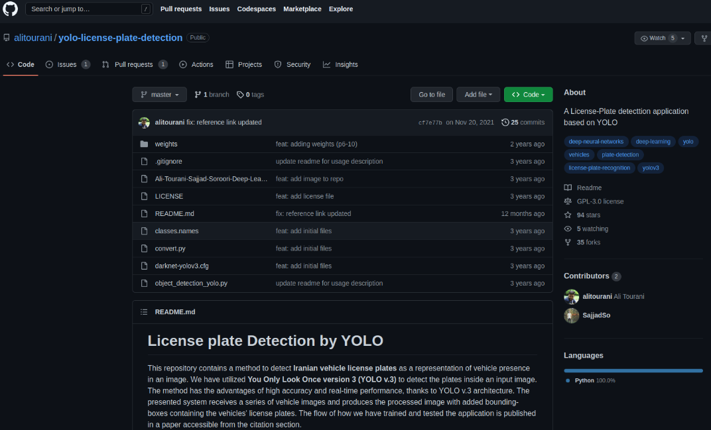 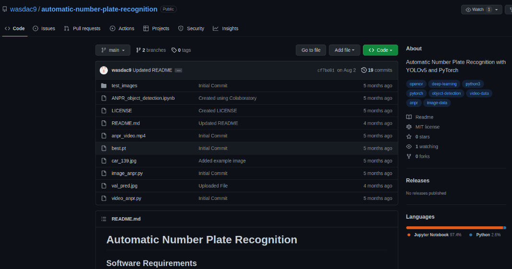{kind=link}
{kind=link}
The repository above contains several source codes that can be used a the repository is also a model created through training for the YoloV4 algorithm which is open source which can be used by everyone to develop their applications. There is a file called yolo_config.py which contains the Yolo algorithm taken from the GitHub repository above with the class name “Yolo_config”, there are two functions.
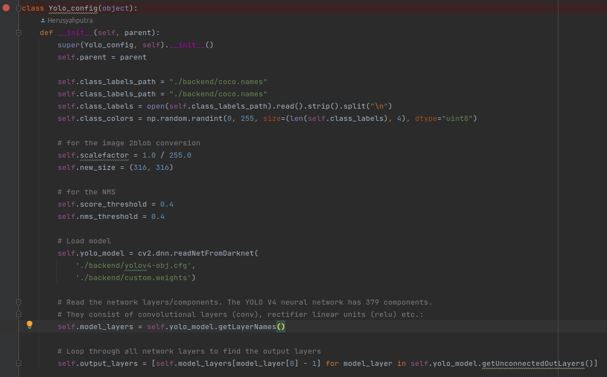{kind=link}
Describe:
The first function “def __init__(self, parent):” which contains initialize the attributes of the class.
Like a:
self.class_labels_path = “./backend/coco.names”
self.class_labels_path = “./backend/coco.names”
The two attributes use “self” as the keyword calling a variable within the class which functions as a path reading for the yolo object naming that will be used. self.class_labels = open(self.class_labels_path).read().strip().split(”n”) self.class_colors=np.random.randint(0,255,size=(len(self.class_labels),4), dtype=”uint8”)
Then, the two attributes above which contain open the contents of the model path that has been called before are given the parameters of the color, size and type used.
# For the image 2blob conversion
self.scalefactor = 1.0 / 255.0
self.new_size = (316, 316)
# For the NMS
self.score_threshold = 0.4
self.nms_threshold = 0.4
Then, given the scalefactor attribute to provide the scale value and box size that will be used when the Yolo algorithm detects an object. Next, the two attributes above are given a score and nms threshold which are useful for selecting the most suitable bounding box for the object.
self.yolo_model=cv2.dnn.readNetFromDarknet(‘./backend/yolov4-obj.cfg’, ‘./backend/custom.weights’)
self.model_layers = self.yolo_model.getLayerNames()
Followed by loading the Yolo model that will be used, “attention” this model has already carried out training by adopting “dnn,” then which is a process of convolutional layers (conv), rectifier linear units (relu) based on the repository retrieved.
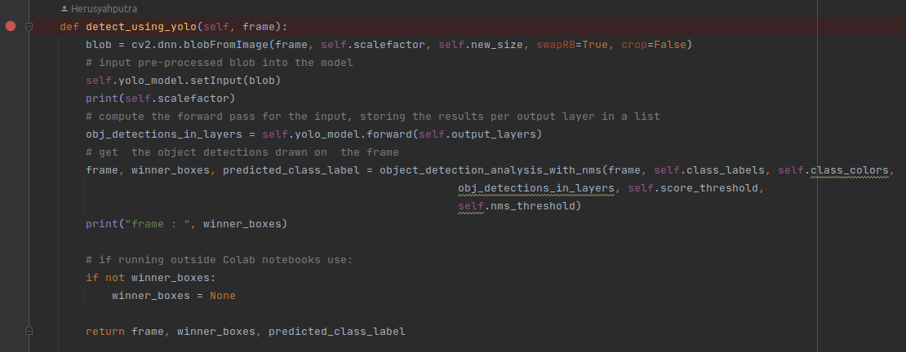{kind=link}
Describe:
The second function, “def detect using yolo” which contains a description of how the Yolo algorithm processes.
Like a:
blob = cv2.dnn.blobFromImage(frame, self.scalefactor, self.new_size, swapRB=True, crop=False)
self.yolo_model.setInput(blob)
Where:
frame– This is the image you want to pre-process (for models)
scalefactor – the scale factor basically multiplies (scales) the image channel. And remember that this scales it down by a factor of 1/n, where n is the given scale factor.
size – this is the size of the target we want the image to be. CNNs most commonly use 224×224 or 229×229 pixels as their input image array, but can tune it to meet model requirements.
swapRB - OpenCV by default reads images in BGR format, but as I mentioned above that the average argument takes values in RGB order, so to prevent tampering with this functionality, as the name suggests swaps the red and blue channels. (why the default value is True)
Then, calculating the forward pass for the input, stores the results per output layer in a list to get the detection of objects drawn on the frame.
obj_detections_in_layers = self.yolo_model.forward(self.output_layers)
frame,winner_boxes,predicted_class_label=object_detection_analysis_with_nms (frame,self.class_labels,self.class_colors,
obj_detections_in_layers,self.score_threshold, self.nms_threshold)